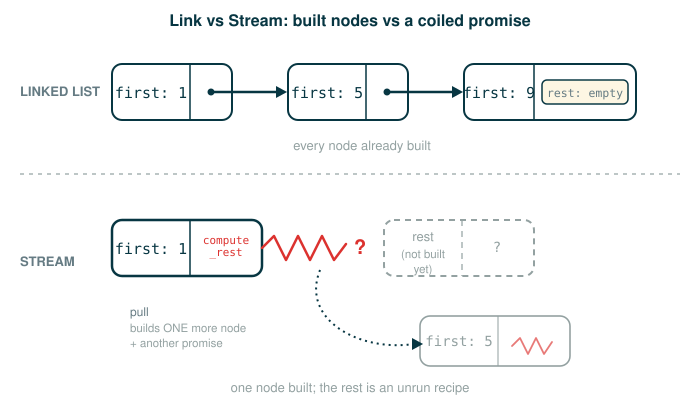

4.2 Streams and Lazy Stream Processing
You have already met two ways to produce values only when they are needed: iterators and generators. This lesson adds a third, and in some ways the most elegant: the stream. By the end you will be able to do five things: explain what a stream stores and why its rest is delayed, build an infinite stream of integers without your program hanging, write map_stream and filter_stream so they stay lazy, read the stream version of the sieve of Eratosthenes, and say precisely how a stream differs from a generator.
A stream is a sequence whose rest can be computed later. That single sentence is the whole idea. The work is learning to trust it: that a sequence can be real and useful even when most of its elements do not exist yet.
A Train You Build One Car at a Time
Imagine standing at a station looking at a train. You can see the first car right in front of you. Coupled to the back of that car is a mechanism that, when you pull it, rolls the next car into view. You never see the whole train at once. You see one car, and a coupler that promises the rest.
A stream has exactly this shape.
first car ---- coupler ----> rest of train
first value -- promise ----> rest of streamThe crucial detail is the coupler. With an ordinary list, the entire train is already parked on the track, every car built and connected, whether or not you ever walk to the end. With a stream, only the front car is built. The rest is a promise: a small piece of code that, when you ask, builds the next car (and hands you another coupler). Because you only ever build what you look at, a stream can describe a train with no last car at all.
The Formal Idea: A Lazily Computed Linked List
In Chapter 2 you built linked lists. A Link held a first value and a rest, where the rest was already another Link or Link.empty. Everything was built up front.
Link(first, rest) rest is already constructed
Stream(first, compute_rest) compute_rest is a function, run only on demandThe official source describes a stream as a lazily computed linked list. It stores two things: a first value, and a zero-argument function (often a lambda) that knows how to compute the rest. The word lazy here is technical: the rest is not produced when the stream is created, only when something actually asks for .rest.
Two consequences follow, and both matter for everything below.
First, a stream can be infinite. Because the rest is only a function, you can write a stream whose rest is itself a stream of the same kind forever, and nothing runs away, because nothing past the first value has been computed yet.

Second, the rest is computed at most once. The first time you ask for .rest, the stream runs its compute_rest function, saves the answer, and throws the function away. Every later request returns the saved answer. This is caching (also called memoization), and it guarantees that s.rest is the same object every time and that an expensive rest is never recomputed.
The Stream Class, Token by Token
Here is the official Stream class. Read it once, then we will walk the two lines that carry the whole design.
# (1)
class Stream:
"""A lazily computed linked list."""
class empty:
def __repr__(self):
return 'Stream.empty'
empty = empty()
def __init__(self, first, compute_rest=lambda: empty):
assert callable(compute_rest), 'compute_rest must be callable.'
self.first = first
self._compute_rest = compute_rest
@property
def rest(self):
"""Return the rest of the stream, computing it if necessary."""
if self._compute_rest is not None:
self._rest = self._compute_rest()
self._compute_rest = None
return self._rest
def __repr__(self):
return 'Stream({0}, <...>)'.format(repr(self.first))
The constructor signature is where laziness enters the design. Walk its tokens.
def __init__(self, first, compute_rest=lambda: empty):
├─ def ............. begins a function definition
├─ __init__ ........ the constructor, run when a Stream is created
├─ self ............ the new Stream object being initialized
├─ first ........... the value at the front of the stream, stored eagerly
├─ compute_rest .... a zero-argument function that will build the rest
├─ =lambda: empty .. default: if no rest is given, the stream ends here
└─ defines the constructor that stores a first value and a recipe for the restThe default lambda: empty is what makes a one-element stream possible: leave compute_rest off, and the rest is a function that returns the empty stream. Now the part that makes laziness real, the rest property.
self._rest = self._compute_rest()
├─ self._rest ...... the field where the computed rest will be cached
├─ = ............... binds that field
├─ self._compute_rest the stored recipe function
├─ () .............. calls it now, with no arguments, forcing the rest
└─ runs the recipe once and stores its result so it is never recomputedself._compute_rest = None
├─ self._compute_rest the stored recipe function
├─ = ............... rebinds it
├─ None ............ a sentinel meaning "already computed"
└─ erases the recipe so the next .rest access returns the cached valueReading the rest property as a whole: the first time you ask, self._compute_rest is not None is true, so it runs the recipe, stores the result in self._rest, and sets self._compute_rest to None. Every later time, the if is false, and it simply returns the cached self._rest. The @property decorator — a Python feature you have not needed until now, not a forgotten prerequisite — is why you write s.rest (no parentheses) even though real work happens behind it: it lets rest be defined as a method but accessed like a plain field, so reading the attribute quietly runs the method.
Streams Next to Linked Lists
The official source puts a Link and a Stream side by side so the one difference stands out. Assume the Link class from Chapter 2 and the Stream class above are both defined.
>>> r = Link(1, Link(2+3, Link(9)))
>>> s = Stream(1, lambda: Stream(2+3, lambda: Stream(9)))
>>> r.first
1
>>> s.first
1
>>> r.rest.first
5
>>> s.rest.first
5
>>> r.rest
Link(5, Link(9))
>>> s.rest
Stream(5, <...>)Look closely at what 2+3 does in each line. When r is built, Link(2+3, ...) evaluates 2+3 to 5 immediately; the whole linked list, including the 5, exists the moment the line finishes. When s is built, the 2+3 sits inside a lambda and does not run yet. It runs only when you ask for s.rest, which is why s.rest.first is 5 but s.rest reports Stream(5, <...>) with the tail still hidden behind the angle brackets. The Link prints its whole structure because it is all there; the Stream prints <...> because the rest is still just a promise.
Let me make that anatomy explicit on the line that builds the stream.
s = Stream(1, lambda: Stream(2+3, lambda: Stream(9)))
├─ s ............... the name bound to the new stream
├─ = ............... assignment
├─ Stream(......... build a stream
├─ 1 ............... its first value, stored now
├─ lambda: ......... a zero-argument recipe for the rest, NOT run now
├─ Stream(2+3, ....) the rest the recipe would build (2+3 stays unevaluated)
├─ ) ............... closes the outer Stream call
└─ binds s to a stream whose first is 1 and whose rest is an unrun promiseHere is a self-contained runnable version. Because Link is not the focus of this lesson, small Link and Stream classes are included so the transcript above runs exactly.
# (2)
class Link:
empty = ()
def __init__(self, first, rest=empty):
self.first = first
self.rest = rest
def __repr__(self):
if self.rest is Link.empty:
return f"Link({self.first})"
return f"Link({self.first}, {repr(self.rest)})"
class Stream:
"""A lazily computed linked list."""
class empty:
def __repr__(self):
return 'Stream.empty'
empty = empty()
def __init__(self, first, compute_rest=lambda: empty):
assert callable(compute_rest), 'compute_rest must be callable.'
self.first = first
self._compute_rest = compute_rest
@property
def rest(self):
"""Return the rest of the stream, computing it if necessary."""
if self._compute_rest is not None:
self._rest = self._compute_rest()
self._compute_rest = None
return self._rest
def __repr__(self):
return 'Stream({0}, <...>)'.format(repr(self.first))
r = Link(1, Link(2 + 3, Link(9)))
s = Stream(1, lambda: Stream(2 + 3, lambda: Stream(9)))
print(r.first)
print(s.first)
print(r.rest.first)
print(s.rest.first)
print(r.rest)
print(s.rest)
Expected output:
1
1
5
5
Link(5, Link(9))
Stream(5, <...>)Tracing When the Rest Is Forced
It is worth slowing down to watch the cache work, because this is the machine model you will rely on for the rest of the lesson. Take the stream s from above and access its parts in order.
| Step | Code | What happens to s |
_compute_rest after |
|---|---|---|---|
| 1 | s = Stream(1, lambda: ...) |
first is 1; rest is an unrun recipe |
a function |
| 2 | s.first |
reads the stored 1; no recipe runs |
unchanged (a function) |
| 3 | s.rest (first access) |
runs the recipe, builds Stream(5, ...), caches it |
None |
| 4 | s.rest (again) |
returns the same cached Stream(5, ...) |
None |
The word for step 3 is forcing: asking for the rest forces the delayed computation to run. Step 4 is the payoff of caching: the rest is not rebuilt, and you get the identical object back. A delayed computation that has been forced is sometimes said to be realized.
Infinite Streams
Now the move that lists cannot make. Because the rest is only a recipe, a stream can describe an endless sequence. The official source builds the stream of positive integers.
# (3)
def integer_stream(first):
def compute_rest():
return integer_stream(first+1)
return Stream(first, compute_rest)
The recursion here looks alarming until you remember laziness. integer_stream(first) returns immediately with a stream whose first is first. The recursive call to integer_stream(first+1) is inside compute_rest, so it does not run until someone forces the rest. Each forced rest builds exactly one more node and hands back another recipe. Walk the return line.
return Stream(first, compute_rest)
├─ return .......... hands a value back to the caller
├─ Stream(......... build one stream node
├─ first ........... its first value, available right now
├─ compute_rest .... the recipe; calling integer_stream(first+1) is deferred
├─ ) ............... closes the call
└─ returns a single node now; the next node is built only when forcedHere is the official transcript, reproduced exactly as the source presents it: in two halves, with an explanation in between. Notice that positives displays as Stream(1, <...>) with its tail hidden, and positives.first reads the stored first value, 1, without forcing anything.
>>> positives = integer_stream(1)
>>> positives
Stream(1, <...>)
>>> positives.first
1When integer_stream is called for the first time, it returns a stream whose first is the first integer in the sequence. The function is nonetheless recursive, because this stream's compute_rest calls integer_stream again with an incremented argument. We say that integer_stream is lazy because that recursive call to integer_stream is only made whenever the rest of an integer stream is requested. The source then picks the session back up, re-showing positives.first before reaching deeper: positives.first is still 1, positives.rest.first forces one node to give 2, and positives.rest.rest reports Stream(3, <...>) with its own tail still a promise.
>>> positives.first
1
>>> positives.rest.first
2
>>> positives.rest.rest
Stream(3, <...>)And a runnable version that forces the first few values.
# (4)
class Stream:
"""A lazily computed linked list."""
class empty:
def __repr__(self):
return 'Stream.empty'
empty = empty()
def __init__(self, first, compute_rest=lambda: empty):
assert callable(compute_rest), 'compute_rest must be callable.'
self.first = first
self._compute_rest = compute_rest
@property
def rest(self):
"""Return the rest of the stream, computing it if necessary."""
if self._compute_rest is not None:
self._rest = self._compute_rest()
self._compute_rest = None
return self._rest
def __repr__(self):
return 'Stream({0}, <...>)'.format(repr(self.first))
def integer_stream(first):
def compute_rest():
return integer_stream(first+1)
return Stream(first, compute_rest)
positives = integer_stream(1)
print(positives.first)
print(positives.rest.first)
print(positives.rest.rest.first)
Expected output:
1
2
3The stream positives does not contain every positive integer in memory. It contains the value 1 and a rule for producing the stream that starts at 2. The integers 2, 3, 4, and so on come into existence only as you force your way down the stream.
Mapping and Filtering Streams, Lazily
A function that transforms a stream must itself stay lazy, or the whole benefit collapses. If map_stream tried to map every element immediately, it would never finish on an infinite stream. The rule is the same as in integer_stream: compute the first result now, and hide the recursive call inside a compute_rest.
Here is the official map_stream.
# (5)
def map_stream(fn, s):
if s is Stream.empty:
return s
def compute_rest():
return map_stream(fn, s.rest)
return Stream(fn(s.first), compute_rest)
The base case s is Stream.empty lets a finite stream end. Otherwise the function applies fn to s.first right now (that becomes the first of the new stream) and defers mapping s.rest until the new stream's rest is forced. Walk the return line.
return Stream(fn(s.first), compute_rest)
├─ return .......... hands the new stream back
├─ Stream(......... build one mapped node
├─ fn(s.first) ..... apply fn to the current first, eagerly, for this node
├─ compute_rest .... recipe that maps s.rest later, keeping the rest lazy
├─ ) ............... closes the call
└─ returns one transformed node now; the rest is mapped only when forcedAnd the official filter_stream. The new wrinkle is that filtering may need to skip the first value if it fails the predicate.
# (6)
def filter_stream(fn, s):
if s is Stream.empty:
return s
def compute_rest():
return filter_stream(fn, s.rest)
if fn(s.first):
return Stream(s.first, compute_rest)
else:
return compute_rest()
Read the two branches carefully. If fn(s.first) is true, the value belongs in the result, so the function returns a node whose first is s.first and whose rest is the deferred filter of s.rest. If fn(s.first) is false, there is no node to emit for this value, so the function calls compute_rest() immediately and returns the filtered rest instead. Walk the false branch.
return compute_rest()
├─ return .......... hands a value back
├─ compute_rest .... the recipe for filtering the rest
├─ () .............. call it NOW, because the current first was rejected
└─ skips the failing first and returns the filtered rest directlyOne subtlety to keep in mind: when the value passes, compute_rest is deferred; when it fails, compute_rest runs now. That means filtering an infinite stream is safe only if it keeps finding values that pass before too long; an infinite run of failures would loop. For the streams in this lesson, passing values always keep arriving.
To collect a few elements from an infinite stream, the source uses a helper that stops after k values.
# (7)
def first_k_as_list(s, k):
first_k = []
while s is not Stream.empty and k > 0:
first_k.append(s.first)
s, k = s.rest, k-1
return first_k
The loop appends s.first, advances s to s.rest, and counts down k. It stops either when the stream runs out or when it has collected k values, so it is safe to point at an infinite stream. Here is the official transcript squaring a stream of integers starting at 3.
>>> s = integer_stream(3)
>>> s
Stream(3, <...>)
>>> m = map_stream(lambda x: x*x, s)
>>> m
Stream(9, <...>)
>>> first_k_as_list(m, 5)
[9, 16, 25, 36, 49]A runnable version that ties the pieces together, including a filter for good measure.
# (8)
class Stream:
"""A lazily computed linked list."""
class empty:
def __repr__(self):
return 'Stream.empty'
empty = empty()
def __init__(self, first, compute_rest=lambda: empty):
assert callable(compute_rest), 'compute_rest must be callable.'
self.first = first
self._compute_rest = compute_rest
@property
def rest(self):
"""Return the rest of the stream, computing it if necessary."""
if self._compute_rest is not None:
self._rest = self._compute_rest()
self._compute_rest = None
return self._rest
def __repr__(self):
return 'Stream({0}, <...>)'.format(repr(self.first))
def integer_stream(first):
def compute_rest():
return integer_stream(first+1)
return Stream(first, compute_rest)
def map_stream(fn, s):
if s is Stream.empty:
return s
def compute_rest():
return map_stream(fn, s.rest)
return Stream(fn(s.first), compute_rest)
def filter_stream(fn, s):
if s is Stream.empty:
return s
def compute_rest():
return filter_stream(fn, s.rest)
if fn(s.first):
return Stream(s.first, compute_rest)
else:
return compute_rest()
def first_k_as_list(s, k):
first_k = []
while s is not Stream.empty and k > 0:
first_k.append(s.first)
s, k = s.rest, k-1
return first_k
s = integer_stream(3)
m = map_stream(lambda x: x*x, s)
print(first_k_as_list(m, 5))
even_squares = filter_stream(lambda x: x % 2 == 0, map_stream(lambda x: x*x, integer_stream(1)))
print(first_k_as_list(even_squares, 5))
Expected output:
[9, 16, 25, 36, 49]
[4, 16, 36, 64, 100]The program never built all integers, all squares, or all even squares. It computed exactly enough to produce the requested values and stopped.
The Sieve of Eratosthenes as a Stream
The source ends with a small masterpiece: prime numbers produced as a stream, using an idea more than two thousand years old. The sieve of Eratosthenes works like this.
- The first number in the stream is prime.
- Remove from the rest every number divisible by that prime.
- Repeat on what remains.
As a stream, each step is one node, and the filtering happens lazily as you ask for more primes. Here is the official function.
# (9)
def primes(pos_stream):
def not_divible(x):
return x % pos_stream.first != 0
def compute_rest():
return primes(filter_stream(not_divible, pos_stream.rest))
return Stream(pos_stream.first, compute_rest)
A note on spelling: the helper is named not_divible in the official source. The intended meaning is "not divisible," and that single missing letter is reproduced here on purpose so this matches the textbook exactly; do not silently correct it. The helper returns True when x is not a multiple of the current prime, so filter_stream(not_divible, pos_stream.rest) keeps only the numbers that survive. Walk the recipe.
return primes(filter_stream(not_divible, pos_stream.rest))
├─ return .......... hands back the rest of the prime stream
├─ primes(......... recursively sieve what survives the current prime
├─ filter_stream(.. lazily remove multiples of pos_stream.first
├─ not_divible ..... the predicate: x % first != 0
├─ pos_stream.rest . the integers after the current first
├─ ) ).............. close both calls
└─ produces the next prime node only when this rest is forcedHere is the official transcript.
>>> prime_numbers = primes(integer_stream(2))
>>> first_k_as_list(prime_numbers, 7)
[2, 3, 5, 7, 11, 13, 17]
>>> prime_numbers.first
2And a runnable version producing the first ten primes.
# (10)
class Stream:
"""A lazily computed linked list."""
class empty:
def __repr__(self):
return 'Stream.empty'
empty = empty()
def __init__(self, first, compute_rest=lambda: empty):
assert callable(compute_rest), 'compute_rest must be callable.'
self.first = first
self._compute_rest = compute_rest
@property
def rest(self):
"""Return the rest of the stream, computing it if necessary."""
if self._compute_rest is not None:
self._rest = self._compute_rest()
self._compute_rest = None
return self._rest
def __repr__(self):
return 'Stream({0}, <...>)'.format(repr(self.first))
def integer_stream(first):
def compute_rest():
return integer_stream(first+1)
return Stream(first, compute_rest)
def filter_stream(fn, s):
if s is Stream.empty:
return s
def compute_rest():
return filter_stream(fn, s.rest)
if fn(s.first):
return Stream(s.first, compute_rest)
else:
return compute_rest()
def first_k_as_list(s, k):
first_k = []
while s is not Stream.empty and k > 0:
first_k.append(s.first)
s, k = s.rest, k-1
return first_k
def primes(pos_stream):
def not_divible(x):
return x % pos_stream.first != 0
def compute_rest():
return primes(filter_stream(not_divible, pos_stream.rest))
return Stream(pos_stream.first, compute_rest)
prime_numbers = primes(integer_stream(2))
print(first_k_as_list(prime_numbers, 10))
Expected output:
[2, 3, 5, 7, 11, 13, 17, 19, 23, 29]To see why this terminates for each prime even though the input is infinite, follow the stream. It begins as every integer from 2 upward.
2, 3, 4, 5, 6, 7, 8, 9, ...The first value 2 is prime, so the rest filters out multiples of 2, lazily.
3, 5, 7, 9, 11, 13, 15, ...The next surviving first is 3, so its rest filters out multiples of 3.
5, 7, 11, 13, 17, ...The point is that the program does not finish one global filtering pass before producing the next prime. Each prime is produced as a node, and only the part of the stream you actually consume is ever filtered. Ask for seven primes, and only enough filtering happens to deliver seven.
Streams Versus Generators
Generators and streams both give you lazy sequences, but they are built differently, and the difference has real consequences.
A generator is backed by a suspended function execution. When you call next, the function runs until its next yield, then freezes its frame in place until the following next. Its laziness lives in a paused stack frame.
paused function frame ----next----> next yielded valueA stream is plain data: a first value and a function that computes the rest. Its laziness lives in an unrun compute_rest, and once forced, the rest is cached as an ordinary object.
first value ----force----> function computes rest (then cached)That structural difference produces the headline distinction from the source. A generator (like any iterator) is consumed: walk it once and it is used up; a second pass yields nothing. A stream is not consumed. Because forcing the rest caches it rather than discarding it, you can traverse the same stream as many times as you like and get the same values every time.
The source states the contrast directly: streams "can be passed to pure functions multiple times and yield the same result each time." The primes stream, in particular, is not "used up" by converting it to a list. You can build the list of the first seven primes, then build it again from the same stream, and get the same seven primes, because the nodes were cached, not consumed.
The closing thought from the source ties streams back to where you started. Just as linked lists give a simple implementation of the sequence abstraction, streams give a simple, functional, recursive data structure that implements lazy evaluation through the use of higher-order functions. The higher-order function is the compute_rest recipe; lazy evaluation is the decision to run it only on demand.
⚠Common Beginner Traps
A first trap is reading s.rest as a stored field that is always ready. In a stream, .rest may be a delayed computation that runs the moment you touch it. The @property decorator hides that work behind ordinary attribute syntax.
A second trap is forgetting the cache. After the rest is forced once, the stream stores it and returns the same object thereafter; it does not recompute. Code that assumes a fresh rest each time gets the identical cached object back, so any side effect or print inside compute_rest runs only on the first .rest access and silently never again.
A third trap is putting the recursive call outside compute_rest. If map_stream or integer_stream calls itself eagerly instead of inside the recipe, it tries to build the entire (possibly infinite) rest immediately and never returns. The recursion must live inside the delayed function.
A fourth trap is converting an infinite stream to a list directly. list(positives) would try to force every node and never finish. Use a bounded helper like first_k_as_list that stops after a finite number of values.
A fifth trap is "fixing" the official not_divible spelling. For source parity it is reproduced exactly; correcting it would make your code differ from the textbook's.
✓Check Your Understanding
- Using the functions from this lesson, what does
first_k_as_list(filter_stream(lambda x: x % 2 == 0, integer_stream(1)), 4)evaluate to? - In the comparison
r = Link(1, Link(2+3, Link(9)))versuss = Stream(1, lambda: Stream(2+3, lambda: Stream(9))), when does the expression2+3actually evaluate in each case? - Why does
integer_stream(1)not hang, even thoughinteger_streamcalls itself? - Why must the recursive call in
map_streamsit insidecompute_rest? - In
filter_stream, why iscompute_rest()called immediately in theelsebranch but only stored in theifbranch? - The source says a stream "can be passed to pure functions multiple times and yield the same result each time." What feature of the
restproperty makes that true, and how does this differ from a generator?
Show the answers
[2, 4, 6, 8].integer_stream(1)is the integers from1upward;filter_streamkeeps only the even ones, lazily; andfirst_k_as_list(..., 4)forces just enough of that stream to collect the first four even integers.- For the
Link,2+3evaluates to5immediately whenris built, because the whole linked list is constructed up front. For theStream,2+3sits inside alambdaand does not evaluate untils.restis forced. - Because the recursive call
integer_stream(first+1)is insidecompute_rest, which is not run when the stream is created.integer_stream(1)returns a single node immediately; the next node is built only when its rest is forced. - So that mapping one node does not eagerly map the entire rest. With the recursive call deferred inside
compute_rest,map_streamproduces one transformed value now and maps the rest only when that rest is forced, which keeps it usable on infinite streams. - If the current first passes the predicate, it becomes a node, and the rest is deferred until forced (stored as
compute_rest). If the current first fails, there is no node to emit, so the function must skip it by computing and returning the filtered rest right away. - The
restproperty caches its result inself._restafter the first access, so forcing the rest stores it rather than discarding it; traversing the stream again returns the same cached nodes. A generator instead holds a single suspended execution that is consumed as it advances, so a second pass yields nothing.
§Summary
A stream is a lazily computed linked list: it stores a first value and a compute_rest function for the rest, and it forces and caches that rest only when .rest is first accessed. Because the rest is just a recipe, streams can represent infinite sequences like integer_stream(1) without running away. Stream-processing functions stay lazy by computing the first result now and deferring the recursive call inside compute_rest; this is exactly how map_stream, filter_stream, and the sieve-of-Eratosthenes primes stream work. Unlike a generator, which is a single suspended execution that gets consumed, a stream is functional, recursive data that can be traversed repeatedly and yields the same values each time, implementing lazy evaluation through higher-order functions. That completes the central idea of implicit sequences: a sequence can be real and useful even when its elements are produced only as they are needed.
▶Step-Through Checkpoint
This block is the lesson in miniature: a three-node stream read access by access. Stepping through it draws the environment diagram of laziness: each Stream object on the heap holds its first beside a _compute_rest lambda that is a not-yet-forced promise, and you can watch that field flip to None as touching .rest realizes the next node and caches it. Before you step through the block below, write down three predictions: which lines run a stored lambda, how many times __init__ runs, and what the final line prints.
# (11)
class Stream:
"""A lazily computed linked list."""
class empty:
def __repr__(self):
return 'Stream.empty'
empty = empty()
def __init__(self, first, compute_rest=lambda: empty):
assert callable(compute_rest), 'compute_rest must be callable.'
self.first = first
self._compute_rest = compute_rest
@property
def rest(self):
"""Return the rest of the stream, computing it if necessary."""
if self._compute_rest is not None:
self._rest = self._compute_rest()
self._compute_rest = None
return self._rest
def __repr__(self):
return 'Stream({0}, <...>)'.format(repr(self.first))
s = Stream(1, lambda: Stream(2, lambda: Stream(3)))
a = s.first
b = s.rest.first
c = s.rest.rest.first
again = s.rest.first
print(a, b, c, again)
Step through it and check each prediction. s.first runs no lambda; the b and c lines force and cache the second and third nodes, so __init__ runs three times. The again line recomputes nothing: _compute_rest flipped to None as each rest was realized, and the print shows 1 2 3 2.